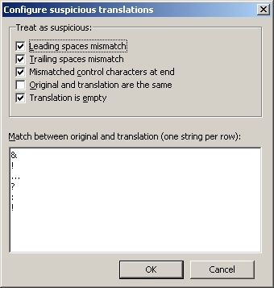

Configure suspicious translations
Use the configuration dialog to specify how IniTranslator should look for and report suspicious translations. Open the dialog from the View-Configure suspicious translations (Alt+F8) menu item:

The following options are available:
- Leading space mismatch
- Counts the number of leading spaces in the original and translation and checks if they match
- Trailing space mismatch
- Counts the number of trailing spaces in the original and translation and checks if they match
- Mismatched control characters at end
- Checks the non-alphabetic characters at the end of the original (if any)
and checks if the translation matches
- Original and translation are the same
- Checks if original and translation contains the same text
- Translation is empty
- Checks if the translation is empty. If activated, this is the same as the
Next untranslated action
- Match between original and translation
- The number of occurrences of each string in the list is compared between original and translation. Adding the string "&" to the list does virtually the same as the
Next unmatched shortcut action.
To save the current settings, click the OK button. Click Cancel to close the dialog without saving the changes.
To perform the actual check, use the View-Next suspicious translation action.